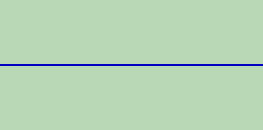

Vous voulez exploiter les performances de programmation de votre petite bête verte ? Vous êtes tombé sur le bon tuto, et sur le bon site. Car ici la règle est d'enseigner TOUT à partir de ZérO ! Même si vous n'avez jamais entendu parler du langage de programmation sur calculatrice (abrégez calto) Casio graph 35+, 60, 65 et 80, ce tuto est fait pour vous ! Trêve de bavardages, passons à la pratique. :diable:
DERNIERE MISE A JOUR : 17/06/07 : LE TUTORIEL EST MAINTENANT TERMINE, NE RESTE PLUS QU'A COMPLETER LES ANNEXES.
Dans ce premier chapitre vous n'allez pas encore commencer à programmer, mais vous allez voir quelques petites choses qui peuvent sembler inutiles, mais après tout, on commence bien de ZérO, non ?
Tout au long de ce tuto je vous enseignerai le langage BASIC pour calculette Casio graph 35+ ou graph 65+. Mis à part cet élément, il vous faut un cerveau et bien sûr, des doigts frétillants d'impatience de commencer à taper sur le petit clavier de votre calto... mais c'est dommage, c'est pas pour tout de suite. :p
Beuh... il sert à quoi ce chapitre, alors ???
Eh bien justement à ce que vous ne fonciez pas tête baissée sur votre calculette sans savoir ce que vous faites ! Je vais à présent vous faire part de quelques petites choses. Tout d'abord, votre calculette (que ce soit une 35+ ou une 65+) comporte 64 Ko de mémoire ; je sais : ce n'est pas beaucoup, mais vous verrez que c'est suffisant. De plus, le langage BASIC est vraiment très simple, comparé aux autres langages de programmation ; mais il n'est pas vraiment rapide, et c'est bien là le revers de la médaille. Si vous vous attendiez à créer le prochain Unreal Tournament sur votre calculette, vous pouvez passer votre chemin ^^. Mais vous verrez quand même qu'au bout du compte, vous pourrez créer de belles petites choses, bien sympathiques.
Donc si j'ai bien compris, tous les jeux nécessitant de la rapidité comme un FPS ou un RTS (stratégie en temps réel) sont à exclure ?
Effectivement, c'est plutôt à bannir. Lorsqu'on fait un jeu pour Casio, il faut toujours se poser certaines questions comme : est-ce que ce sera jouable ? Quels types de jeux sont appropriés à la calto ? Etc. Selon moi, les jeux les plus aptes à tourner sur une Calculatrice sont les jeux au tour par tour, ou un jeu de gestion (il existe un SimCity !) ou encore tous les jeux du genre, et les jeux de cartes, pourquoi pas ? Si vous vous posez ces questions avant de créer un jeu, vous ne risquerez pas d'être déçus au final.
J'ai le plaisir de vous informer que vous ne commencerez toujours pas à programmer maintenant. :p Tout simplement parce que vous ne savez pas encore le faire.
Tu te fiches de nous ou quoi ? Je vais dans le menu RUN, j'appuie sur Alpha, et je commence à écrire c'est tout ! Nan ?
Absolument pas ! Tout faux, il ne faut pas aller dans le menu RUN (ou du moins pas tout de suite) et encore moins écrire directement au clavier. Ça peut paraître idiot comme réflexion0 mais nombreux sont ceux qui ont commencé par faire ça ! (Et pour tout vous dire0 j'en fais partie :-° ) Voici le menu principal de votre Casio (oui, il est différent du vôtre, car celui-ci est le menu de la graph85 ; mais ce n'est pas important, car les parties qui nous intéressent s'y trouvent) :
Avec le curseur, déplacez-vous sur la case PRGM. Si vous n'avez pas de programmes, rien ne s'affiche (logique). Vous allez donc en créer un ! Il suffit pour ça de cliquer sur Edit en bas de l'écran.
Heu t'es marrant toi, je fais comment ?
Bonne question : en fait, les onglets situés en bas de l'écran correspondent aux touches F de votre calculatrice. Appuyez sur la touche F située en dessous de new et une nouvelle fenêtre s'ouvre...
Voilà, maintenant vous allez enfin pouvoir commencer à programmer dans le chapitre suivant !
Nous y voilà enfin : après avoir entré un nom pour votre programme, vous voilà face à votre écran. Je vais vous le détailler (encore une fois vous n'avez pas pareil que moi, je le répète : c'est normal, ne vous en faites donc pas si prochainement vous voyez quelque chose du même style) :
La partie du haut est celle où se trouve le nom de votre programme. La partie centrale, vous vous en doutez, est celle où l'on écrira le code. La partie du bas est la plus importante. C'est ici que se trouvent nos "touches" pour programmer. Chaque onglet correspond à une des touches F du clavier de votre calculette. Ainsi le premier onglet correspond à la touche F1, le second à la touche F2, le troisième à la touche F3, etc. La difficulté sera donc de retenir où est située chaque fonction dans les onglets (mais vous vous y ferez très vite, ne vous inquiétez pas), et c'est pour ça que j'ai mis à votre disposition en annexes la liste de l'emplacement de toutes les fonctions dont nous aurons besoin par la suite. Je vais maintenant détailler un peu plus ces quelques onglets présents. TOP : cet onglet permet de remonter tout en haut de votre programme. BTM : vous vous en doutez, cet onglet fait l'inverse de TOP, il vous amène à la fin de votre programme.
MENU : cet onglet ouvre un menu de fonctions avancées, nous ne nous en servirons donc pas pour le moment. SYMB : cet onglet ouvre un menu constitué de quelques symboles qui peuvent être utiles (guillemets, apostrophes, dièse, slash, étoile, tilde).
Une dernière petite info, puis promis, on commence à programmer. Il faut que vous sachiez que le mode dans lequel nous allons travailler tout au long de la première partie est le mode Locate. L'écran de votre calculatrice est, dans ce mode, composé de 21 cases en longueur et de 7 cases en hauteur.
Heu... tu peux me la refaire, là ? o_O
Une exemple vaut toujours mieux qu'un long discours :
Vous pouvez compter : il y a bien 21 * 7 cases. Vous comprenez mieux maintenant ? J'espère parce que j'ai mis 20 minutes à le faire dans Paint, et sans souris en plus !
Donc en fait, on peut écrire 21 caractères sur une ligne, et écrire 7 lignes , c'est ça ?
Pour afficher du texte en mode Locate; il existe plusieurs manières de procéder. Mais à chaque fois une contrainte revient : les guillemets. Effectivement, à chaque fois que vous voulez entrer du texte, il vous faudra l'entourer de guillemets, comme dans beaucoup d'autres langages de programmation d'ailleurs.
La technique dites "brute"
Elle consiste à écrire dans votre programme directement un texte entre guillemets, sans vous soucier du nombre de caractères par lignes (21, je vous le rappelle).
Regardez ce code :
"VOILA UN TRES BON EX
EMPLE DE LA METHODE B
RUTE"
Essayez donc ce code, vous allez voir. Après avoir écrit le code, appuyez sur la touche exit située sur le clavier de votre calculette (c'est une petite touche bleue). Et là, magie ! Vous voyez votre programme sélectionné ! Il n'y a plus qu'à appuyer sur EXE pour que votre tout premier programme se lance !
Beuh c'est nul ! C'est tout lent et puis les mots sont coupés ! Comment ça se fait ?
Ce n'est pas très dur à comprendre, il n'y a aucune séparation volontaire des mots, la calculatrice affiche donc les 21 premiers caractères (à savoir : VOILA UN TRES BON EXE) puis va à la ligne pour écrire les 21 prochains caractères : MPLE DE LA METHODE BR, et finit sur la ligne d'en dessous avec les caractères restants : UTE . Donc, au final, vous vous retrouvez avec ceci sur votre écran :
VOILA UN TRES BON EXE MPLE DE LA METHODE BR UTE
Vous en conviendrez : c'est pas jojo. :( On va essayer d'améliorer un peu tout ça. ^^
On pourrait par exemple faire un truc du style :
VOILA UN TRES BON EX- EMPLE DE LA METHODE BRUTE
Je vous laisse trouver le code approprié. C'est pas bien dur. Mais ne vous laissez pas avoir par les apparences. ;)
Allez, je suis gentil, je vous donne la correction !
"VOILA UN TRES BON EX
-MPLE DE LA METHODE
BOURIN"
Alors, vous avez saisi le petit piège ? Il faut faire attention car dans le code que l'on écrit, il ne faut pas compter les guillemets ! Ils sont souvent source d'erreur. Pour être sûr de faire quelque chose de correct, il aurait fallu séparer les lignes. C'est-à-dire fermer les guillemets à la fin de la ligne, et les rouvrir pour le début de l'autre. Mais attention une fois que vous avez fermé les guillemets, appuyez sur EXE pour passer à la ligne, une petite flèche apparaît alors, elle est indispensable ! C'est elle qui sépare deux instructions. En gros le code aurait fait :
"VOILA UN TRES BON EX
-" l'instruction est finie, on appuie sur [EXE] et la petite flèche apparait
"MPLE DE LA METHODE" [EXE]
"BRUTE"
Voilà, j'espère que vous commencez à comprendre ! Je ne peux que vous recommander de faire des tests, il n'y a que comme ça que l'on progresse.
C'est bon je me suis entraîné, j'ai compris, mais je trouve ça vraiment lent ! C'est la vitesse maximum ?
Non bien évidemment, la vitesse d'affichage est très lente car nous utilisions la méthode "brute" ; maintenant que diriez-vous de la technique douce avec affichage... instantané ? :p
La technique douce
Cette technique est beaucoup mieux que la précédente, et je ne vous cacherai pas que c'est celle que nous allons toujours utiliser à partir de maintenant. Vous vous rappelez l'histoire de votre écran divisé en 21 * 7 cases ? Eh bien c'est maintenant que ça va nous servir. Chaque case a des coordonnées. Si je reprends l'exemple du début :
La première lettre de la première ligne, le V est située dans la première case. Ses coordonnées sont 1,1, le O a pour coordonnées 2,1, et le E du "ET" de la seconde ligne 1,2. Vous l'aurez compris : on indique d'abord le numéro de la colonne, puis celui de la ligne. La syntaxe est donc la suivante : abscisse, ordonnée, "TEXTE" . Maintenant, essayez d'écrire ces deux lignes avec la méthode douce (qui s'appelle en fait la méthode locate). Allez ! Je suis gentil : je vous aide :
Locate 1,1,"VOICI LA LIGNE" [EXE]
Locate 1,2,"ET EN VOILA UNE AUTRE"
La fonction Locate se trouve dans l'onglet I/O. Pour y accéder : SHIFT \ VARS \ F6 \ I/O \ F1.
Sachez aussi que si votre script plante, un message d'erreur s'affichera ; la plupart du temps, ce message pourra être Syn Error, ce qui signifie une erreur de syntaxe : vous avez tout simplement omis un guillemet, ou vous avez mis un espace là où il ne fallait pas. etc. Notez aussi que si vous appuyez sur la touche gauche ou droite de votre clavier (les touches replay), la calculette vous amène directement à votre erreur. Mais parfois l'erreur peut être causée par autre chose, situé un peu plus haut dans le programme.
Voila pour le premier abord avec ce langage BASIC Casio. Vous allez maintenant découvrir les choses intéressantes...
Chapitre fondamental que celui-ci ! Vous allez voir ce que sont les variables. En BASIC, elles servent tout le temps ! Vous ne pourrez plus vous en passer.
En BASIC Casio, vous pouvez utiliser 28 variables : les 26 lettres de l'alphabet, ainsi que le r(minuscule) et le thêta.
Quoi ? Mais c'est quoi, ce langage ? Il y a un nombre limité de variables ? C'est-à-dire que je ne peux pas en créer avec le nom que je veux ?
Oui, c'est exactement ça, gardez toujours à l'idée que le langage BASIC Casio est un langage très limité.
Bon tant pis, je m'y ferai, mais comment fait-on pour afficher une lettre à l'écran ?
Déjà, regardez où les lettres sont situées. Elles sont disséminées un peu partout sur le clavier, mais à chaque fois, elles sont en petit et en rouge au-dessous d'une touche, c'est le signe qu'il faut appuyer sur Alpha, la touche rouge à gauche de votre clavier.
Imaginons que j'ai un long texte à écrire, c'est pénible d'appuyer toujours sur Alpha avant de faire une lettre, il n'y a pas d'autre moyen ?
Si, bien sûr. ^^ Il suffit pour ça d'appuyer sur Shift (juste au-dessus de Alpha), et ensuite sur Alpha : vous pouvez maintenant écrire tout plein de lettres à la suite, notez que pour enlever le blockage Alpha, il suffit de ré-appuyer dessus, tout simplement.
Maintenant que vous savez écrire des lettres, retournez dans votre programme. Une variable vaut par défaut 0, mais si vous n'êtes pas le seul utilisateur de la calculatrice chez vous, il est fort possible que certaines variables soient utilisées. On va donc les remettre toutes à zéro. Pour assigner une valeur à une variable, il n'y a rien de plus simple ! il suffit de faire :
5->A
La syntaxe est donc : nombre à assigner à la variable->lettre de la variable à laquelle vous assignez la valeur.
La petite flèche : -> se trouve sur votre clavier au niveau de la lettre L : pour la reproduire à l'écran, il suffit juste d'appuyer sur la touche correspondante.
Donc : si on avait voulu remettre à zéro la variable, il aurait fallu écrire : 0->A. Vous voyez, ce n'est pas bien dur ^^ .
Mais si j'avais voulu remettre à zéro toutes les variables, il aurait fallu les écrire une par une ?
Le BASIC est un langage limité, mais quand même, il y a une façon toute simple d'assigner la même valeur à plusieurs variables : 0->A~Z. Toutes les variables de A à Z auront maintenant pour valeur 0.
Est-il possible d'assigner une chaîne de caractères à une variable ?
Bonne question. Malheureusement la réponse est non, il est impossible d'assigner des lettres à une variable ; vous ne pouvez assigner que des nombres (10 par variable au maximum).
Bon c'est bien, nous savons maintenant comment assigner une valeur à une variable. Mais comment faire pour l'afficher ? Si vous avez testé le code précédent, vous pouvez voir que l'écran affiche la variable directement. La fonction display permet également d'afficher une variable, vous la trouverez en ouvrant le menu prgm (attention, ce menu n'a rien à voir avec celui du même nom sur le menu principal) en appuyant sur shift, puis vars : un menu avec plusieurs onglets s'ouvre. Vous l'aurez remarqué : l'onglet qui nous intéresse est bien présent. C'est le petit triangle noir à droite, c'est la fonction display. Elle s'utilise très simplement, vous pouvez mettre ce petit triangle après une variable et ça en affichera la valeur ; mais vous pouvez aussi vous en servir dans un texte, car si vous écrivez beaucoup, vous vous rendrez compte que le texte défile tout seul à l'écran, faisant disparaître la ligne du dessus. Pour y remédier, insérez la fonction display là où vous souhaitez que le programme fasse une pause. Le display (abrégez disp) sépare deux instructions, donc pas besoin d'appuyer sur [EXE] après un disp.
Ok, c'est cool tout ça, mais moi je veux que ma variable s'affiche en bas à gauche de l'écran ! Je fais comment ?
Eh bien avec un Locate bien sûr ! Si vous voulez placer la valeur de votre variable en bas à gauche, il suffit de l'indiquer !
5->A [EXE]
Locate 1,7,A
Et voilà, tout simplement ! Vous pouvez tout aussi bien ne mettre que des variables !
21->A [EXE]
7->B [EXE]
5->C [EXE]
Locate A,B,C
Voilà, vous vous servirez très souvent de ça à l'avenir ! Sur notre écran, dans cet exemple, 5 s'affichera donc en bas à droite ! Faites vos essais, vous comprendrez mieux.
Comme dans n'importe quel langage de programmation, vous pouvez effectuer tout plein de calculs sur vos petites variables ! Exemple : 1+1->A Vous pouvez effectuer des calculs entre plusieurs variables aussi ! Exemple : A+2A->A Alala, ça rappelle de mauvais souvenirs de maths ça, moi je vous le dis ^^ . Mais c'est en fait tout simple à comprendre ! Imaginons que dans le deuxième exemple, A vaut 3 au début. A la fin, il vaudra donc : 9 ! (3 + 6)
Il n'y a rien de plus simple ! Vous voulez demander à l'utilisateur d'entrer son âge par exemple, pour ensuite le rentrer dans la variable A. Il faudra utiliser la fonction ?, qui se trouve juste à côté du disp. Par contre, cette méthode ne fonctionne pas avec Locate. La procédure est donc la suivante :
"QUEL AGE AVEZ VOUS "
?->A
La valeur qu'entrera l'utilisateur sera stockée dans la variable A ! C'est tout ce que vous devez savoir au niveau des variables ^^
La force du Getkey !
Attention, nous allons aborder une chose primordiale !!! Vous vous en servirez tout le temps si vous créez des jeux ! Le getkey est la valeur de chaque touche. Ainsi, la valeur de la touche EXE est 31, par exemple. Chaque touche à une valeur appropriée SAUF la touche AC/ON.
Ok c'est cool, mais à quoi ça va nous servir de connaître la valeur d'une touche ?
Eh bien tout simplement à savoir quelle touche l'utilisateur à enfoncé ! Donc, la base même d'un menu par exemple. Et en plus, vous savez quoi ? C'est très simple. Regardez cette image :
Si vous essayez de comprendre comment ça marche, vous verrez que ce n'est finalement pas très compliqué. Plus tard dans le cours, quand vous aurez vu les boucles, vous apprendrez à créer un programme qui permet de relever le getkey d'une touche directement en la pressant, directement dans un programme.
Revenons-en à nos moutons. C'est cool, l'utilisateur a pressé une touche, et après ? Il faut savoir que la touche pressée est stockée dans le Getkey : donc si vous attribuez le getkey à une variable, vous pouvez ensuite faire tout ce que vous voulez avec !
Bon, déjà vous devez savoir où se cache cette fameuse fonction ! Eh bien tout simplement au même endroit que Locate. Sans les boucles, vous n'allez pas pouvoir faire grand chose avec Getkey, mais ce n'est pas une raison pour l'oublier : gardez-le bien au chaud quelque part dans votre tête.
Si vous avez tout bon au QCM, c'est vraiment que vous avez tout compris sur les variables ! Voyons maintenant comment vous vous débrouillerez avec les conditions.
La première fonction conditionnelle que nous allons voir est la fonction If.
Ok, mais c'est quoi, une fonction conditionnelle ?
Une fonction conditionnelle est une fonction qui permet d'exécuter plusieurs instructions suivant une ou plusieurs conditions. La structure est la suivante :
If condition(s) Then instruction(s) à respecter IfEnd
Ces commandes se trouvent dans l'onglet COM, lui-même situé dans l'onglet PRGM. Pour y accéder : SHIFT / VARS / F1 /...
Avant de continuer, vous devez connaître plusieurs signes :
Signe
Signification
Combinaison de touches
=
égal à
SHIFT / PRGM / F6 / REL / F1
!=
n'est pas égal à
SHIFT / PRGM / F6 / REL / F2
>
supérieur à
SHIFT / PRGM / F6 / REL / F3
<
inférieur à
SHIFT / PRGM / F6 / REL / F4
>=
supérieur ou égal à
SHIFT / PRGM / F6 / REL / F5
<=
inférieur ou égal à
SHIFT / PRGM / F6 / REL / F6
Reprenons maintenant l'exemple du chapitre précédent, lorsqu'on demande l'âge de l'utilisateur. On va écrire une phrase automatiquement en fonction de son âge, regardez cet exemple :
"QUEL EST VOTRE AGE "
?->A
If A>=18 [EXE]
Then "TU ES MAJEUR" [EXE]
IfEnd [EXE]
If A<18 [EXE]
Then "TU ES MINEUR" [EXE]
IfEnd
Faites vos tests pour comprendre mieux comment opère la fonction. On va maintenant l'améliorer en utilisant la fonction Else, qui correspond à "sinon" en anglais.
La structure est la suivante :
If condition(s) à respecter Then instruction(s) Else instruction(s) IfEnd
Le code aurait donc donné :
If >=18
Then "TU ES MAJEUR"
Else "TU ES MINEUR"
IfEnd
Le code s'en voit donc considérablement allégé, mais surtout plus simple à comprendre pour n'importe quel humain. Remarquez aussi que je n'ai pas mis [EXE] à la fin des lignes, je pense que vous pouvez le faire tout seul dorénavant. Vous pouvez aussi indiquer plusieurs conditions à respecter grâce aux connecteurs logiques : And, Or, Not. Vous trouverez ces connecteurs dans un antre onglet : l'onglet OPTN. Pour y accéder, utilisez la touche OPTN, située à coté de SHIFT.
Connecteur logique
Signification
Combinaison de touches
And
"et"
OPTN / F6 / F6 / LOGIC / F1
Or
"ou bien"
OPTN / F6 / F6 / LOGIC / F2
Not
"n'est pas"
OPTN / F6 / F6 / LOGIC / F3
Autant les deux premiers connecteurs logiques sont assez évidents à comprendre, autant le dernier nécessite quelques petites explications. Not est un connecteur assez particulier, peu de personnes l'utilisent car, il faut bien le dire, il n'est pas très utile. Concrétement, il sert à dire que quelque chose n'est pas égal à / supérieur à / inférieur à.
Mais attends, c'est complètement nul ton truc, là ! Si ce n'est pas égal à, il y a déjà un signe pour ! De plus, si ce n'est pas supérieur à, ça signifie que c'est donc inférieur ou égal à, et inversement ! Il est bidon ton connecteur ! non ?
Voilà ! C'est à peu près ce que j'ai voulu dire en disant que son utilité était très réduite, mais vous deviez tout de même savoir à quoi il correspondait.
Voici une autre fonction, beaucoup plus courte que la fonction If. Elle permet d'exécuter une seule instruction, contrairement à la fonction If, avec laquelle vous pouvez en éxecuter autant que vous le souhaitez ! Mais il faut retenir un avantage non négligeable, le saut conditionel tient souvent sur une ligne. Reprenons l'exemple de l'âge :
"QUEL AGE AVEZ-VOUS "
?->A
A<18=>"SALUT P'TIT"
A>19=>"SALUT ADULTE"
La nouveauté ici, c'est bien sûr la double flèche =>. C'est ce que l'on appelle le saut conditionnel. Vous trouverez cette fonction dans l'onglet JUMP : SHIFT \ PRGM \ F3 \ F3. C'est tout ce qu'il y a à savoir sur les conditions. ^^
Vous voyez, je ne vous avais pas menti en vous disant que les conditions n'étaient pas source de prise de tête... Le chapitre qui suit est tout aussi intéressant : les boucles.
Vous voici donc au dernier chapitre de cette Première Partie. Un chapitre indispensable, car vous vous servirez des boucles dans chaque programme futur. Allez bonne chance, c'est la dernière ligne droite de l'apprentissage des bases du Basic Casio. ;)
La première boucle que nous allons voir dans ce chapitre est la boucle Do: LpWhile. Mais tout d'abord, qu'est-ce qu'une boucle, me direz-vous ? Une boucle est, comme son nom l'indique, une série d'instructions qui sera répétée en boucle tant qu'une ou plusieurs conditions ne sont remplies.
L'emplacement des boucles sur la calto
Tout au long de ce chapitre sur les boucles, vous allez découvrir de nouvelles fonctions. Pour éviter de vous indiquer à chaque fois leur emplacement, je vous indique ici, en début de chapitre, leur emplacement général. Vous vous rappelez de l'onglet COM ? Eh bien il va encore nous servir, car toutes les boucles se trouvent dedans.
Do : SHIFT / PRGM / F1 / F6 / F6 / F3
LpWhile : SHIFT / PRGM / F1 / F6 / F6 / F4
While : SHIFT / PRGM / F1 / F6 / F6 / F1
WhileEnd : SHIFT/ PRGM/ F1 / F6 / F6 / F2
For : SHIFT / PRGM / F1 / F6 / F1
To : SHIFT / PRGM / F1 / F6 / F2
Step : SHIFT / PRGM / F1 / F6 / F3
Next : SHIFT / PRGM / F1 / F6 / F4
Revenons-en à nos moutons
Entrons maintenant dans le vif du sujet. Comme je vous l'ai dit un peu plus haut, la première boucle que nous allons voir est la boucle Do:LpWhile. La syntaxe sera la suivante :
Do ##on initialise la boucle
##instructions à répéter en boucle
LpWhile ##on indique à la suite du LpWhile les conditions à respecter
##fin de la boucle
Je vais maintenant expliquer un peu plus en détail ce bout de code. Comme un bon exemple vaut toujours mieux qu'un long discours :
1->A
Do
"TEST BOUCLES"
A+1->A
LpWhile A<5
Essayez de comprendre ce code par vous-mêmes, combien de fois sera affiché le message "TEST BOUCLES" ?
4 fois, eh oui, et non pas 5.
Vous êtes tombés dans le piège ? C'est que vous n'avez pas lu attentivement le code ci-dessus. Bon : je vais expliquer quand même. :p
1->A
Tout d'abord on initialise la variable A à 1.
Do
Ensuite on initialise (j'aime bien ce mot ;) )la boucle.
"TEST BOUCLES"
1ère instruction : TEST BOUCLES : c'est le texte qui s'affichera en boucle tant que la condition ne sera pas respectée.
A+1->A
2ème instruction : sur cette ligne, on demande à la calculatrice d'ajouter 1 à la valeur de A tant que la condition n'est pas remplie. Ainsi, au premier passage de la boucle, la variable A vaudra 2 (1+1), puis au deuxième, elle vaudra 3 (2+1), et ainsi de suite.
LpWhile A<5
La boucle se terminera lorsque la condition sera remplie, à savoir lorsque la variable A sera inférieure à 5, et non pas égale à 5. Et je pense que ce fut la raison de votre erreur, si erreur il y eut. ;)
Vous devez impérativement comprendre ce bout de code parfaitement. N'hésitez pas à créer vos propres boucles pour bien comprendre. ;)
Tiens, j'allais oublier. Vous vous souvenez de la fonction Getkey ? Elle peut déjà nous servir ici. Par exemple, pour attendre que l'utilisateur appuie sur une touche pour continuer. Exemple : vous voulez que le suite du programme s'affiche seulement si l'on appuie au préalable sur la touche EXE. C'est tout à fait possible ! Regardez ce bout de code :
Do:LpWhile Getkey!=31
##suite du code
Vous remarquerez que j'ai mis des : . Ils permettent de séparer deux instructions. C'est exactement comme la flèche, lorsque l'on appuie sur EXE, mais ça permet de gagner de la place. Mais je vous conseille de n'utiliser les : que pour ce genre de cas-là.
Heu... :euh: il ne manquerait pas des instructions par hasard ?
Eh bien non. Car si l'on réfléchit, que veut-on voir se répèter en boucle ? Oui, rien ! La calculette ne doit rien faire tant que l'on a pas appuyé sur la touche voulue. Examinez la dernière ligne, si l'on traduit cela donnerait : "Continuer la boucle tant que la valeur de la touche pressée n'est pas égale à 31". Or, la valeur 31 est assignée à la touche EXE, cela revient donc à dire "Continuer la boucle tant que la touche EXE n'a pas été pressée. En résumé, on pourrait dire que la calculette va continuer à "ne rien faire" tant que l'on aura pas appuyé sur EXE.
Un petit exercice pour vous entraîner : écrivez un texte bidon, puis demandez à l'utilisateur d'appuyer sur EXE pour continuer le programme. Et puis pour le fun, il faut que le [EXE] de la phrase "Appuyez sur [EXE]" clignote, histoire de rendre le tout plus vivant :). Petit indice, un clignotement n'est ni plus ni moins que le résultat de l'affichage du mot, et de son effacement, en boucle ;).
Locate 1,1,"VOILA UN TEXTE BIDON"
Locate 1,7,"APPUYEZ SUR"
Do
Locate 12,7,"[EXE]"
Locate 12,7," "
LpWhile Getkey!=31
##Suite du code
La boucle While / Wend (comprenez While / While End) est quasiment identique à la précédente. Ainsi, je n'aurai pas grand chose à rajouter. La syntaxe n'est par contre pas tout à fait la même, car ici, la condition sera exprimée en début de boucle (alors que, rappelez-vous, avec la boucle précédente, elle était à la fin). Voici donc la syntaxe à respecter :
While condition(s) à respecter Instruction(s) WhileEnd
Si elles sont si identiques, pourquoi choisir l'une ou l'autre, alors ?
Eh bien tout simplement parce qu'elles ne sont pas si identiques que ça. Vous l'aurez peut-être remarqué, mais la seconde boucle présente une différence notoire par rapport à la première. Dans le cas d'une boucle Do/LpWhile, la boucle sera toujours lue au moins une fois, alors que dans le cas d'une boucle Whle/WEnd, si la condition est déjà remplie dès le départ, la calto (abréviation de calculatrice ;) ) sautera la boucle.
Si nous répétons l'exemple de tout à l'heure, nous aurons donc :
Locate 1,1,"VOILA UN TEXTE BIDON"
Locate 1,7,"APPUYEZ SUR"
While Getkey!=31
Locate 12,7,"[EXE]"
Locate 12,7," "
WEnd
##Suite du code
Cette boucle inclue en elle-même un compteur, ce qui est très utile lorsque vous voulez faire marcher les fonctions à l'intérieur de la boucle un certain nombre de fois. Et puis il est simple à utiliser. Mais bon, si vous m'écoutez, tout est très simple ; c'est vrai qu'une fois compris, c'est toujours simple ...
For, To, Next
Cette fonction demande une petite chose : une variable, et c'est tout. Comme d'habitude, la syntaxe :
Forla valeur de départ que vous donnez à la variable, Tola valeur d'arrivée de la variable les fonctions à exécuter Next
Le chemin d'accès des fonctions For, To et Next est : SHIFT \ PRGM \ F1 \ COM \ F6 . Toutes les fonctions sont là : For , To, Step (une fonction que nous verrons à la fin de cette partie), et Next.
Je reconnais que comme ça, ça ne parait pas évident ; mais un petit exemple vous aidera à mieux comprendre : imaginez que vous ayez copier sur votre voisin, et que vous ayez eu comme punition à copier 10 fois "Je ne dois pas tricher". Eh bien à la calculatrice, ce serait un jeu d'enfant :
For 1->A To 10
"JE NE DOIS PAS COPIER"
Next
Alors, les explications :
la variable A prend comme valeur de départ 1 (For 1->A), et devra s'arrêter lorsqu'elle aura atteint la valeur 10 (To 10).
La phrase s'affiche à l'écran.
La variable A voit augmenter sa valeur de 1 (Next).
La boucle s'exécutera alors jusqu'à ce que la variable A ait atteint la valeur 10 ; c'est-à-dire lorsqu'elle aura écrit 10 fois la phrase. Voilà déjà un premier avantage à être programmeur... non ? Les punitions faites en 30 secondes, c'est pas beau, ça ?
Est-on obligé d'augmenter la valeur de 1 ? Est-ce qu'on pourrait l'augmenter de 2, par exemple ?
Bien on ne peut pas dire que vous n'êtes pas curieux ! Mais de toute manière, cette question tombe à pic : c'est exactement ce que je veux vous montrer après. Il est donc possible de choisir le pas (eh oui, c'est comme ça que ça s'appelle) pour augmenter la valeur différemment.
For, To, Step, Next
C'est exactement la même syntaxe, sauf que sur la ligne où l'on déclare les valeurs de départ et d'arrivée, on rajoute le pas :
Forvaleur de départTovaleur d'arrivéeSteppas
Je n'ai pas vraiment d'idée pour trouver un bon exemple ; on va donc en faire un débile. Créons un programme qui compte de 2 en 2 en partant de 10, et en allant à 30 :
For 10->A To 30 Step 2
A¤
Next
Pas besoin de vous expliquer ce programme, vous l'avez compris ? Vous devez vous dire (vu les exemples que j'ai choisis) que cette fonction n'est pas très utile, mais vous vous trompez lourdement ; lorsque vous ferez des jeux, elle vous sera plus qu'utile.
Merci beaucoup à Ilae qui à écrit ce mini-tuto sur la boucle for que j'ai à peine modifié.
Eh bien voilà : la fin de ce chapitre marque aussi la fin de cette Première Partie. Vous êtes prêts pour la programmation graphique, mais faites une petite pause avant, car maintenant on enclenche la vitesse supérieure...
Nous y voici enfin ! Votre premier TP ! Je n'ai en ce moment, je dois dire, que très peu de temps à vous consacrer. Mais je fais de mon mieux et j'arrive donc aujourd'hui avec le TP du jeu + ou -. Vous connaissez tous ce jeu, n'est-ce pas ?
Bah oui bien sûr, quoique, heu en fait non pas vraiment...
Le jeu consiste à faire deviner le nombre mystère choisi de manière aléatoire (oula...) par la calculatrice en un nombre limité de coups, et tout ça par le biais d'indices simples, tels que "Non c'est plus !" ou encore "Non c'est moins !", d'où le nom du jeu vous l'aurez compris ! Vous êtes prêts ? Alors allons-y !
Par où commencer ?
Par la théorie ! Eh oui, le passage obligé (même pour les petits jeux) que malheureusement beaucoup zappent ! A tort, bien sûr. C'est absolument indispensable si vous ne voulez pas vous paumer dans votre propre code, car la calculatrice impose une contrainte de plus : un faible champ de vision ! Un bon brouillon s'impose donc.
Ok cool, un brouillon, pas de problème, mais heu, faut écrire quoi dessus ?
Le brouillon s'organise en plusieurs étapes :
De prime abord
Dans un premier temps, il serait bien de recenser toutes les variables dont on aura besoin dans notre code, en signalant clairement ce que chacune signifiera. Réfléchissons :
on aura tout d'abord besoin d'une variable M "nombre mystère",
puis ensuite d'une variable "nombre entré" N.
En théorie, ces deux variables nous suffiraient. Bien sûr, vous pouvez choisir la lettre que vous voulez pour les définir.
Réfléchir sur les boucles
Avant de réfléchir sur la boucle la plus appropriée, il faut d'abord réfléchir sur ce que l'on veut faire.
1. Le nombre mystère est choisi.
2. On demande d'entrer un nombre à l'utilisateur.
3. Une fois le nombre rentré, plusieurs possibilités s'offrent à nous :
4. soit N est supérieur à M, et dans ce cas on affiche "Plus petit",
5. soit N est inférieur à M, et on affiche "Plus grand",
6. soit N = M, et dans ce cas on affiche "Bravo".
7. Si le nombre mystère n'a pas été trouvé, on retourne à l'étape 2.
Si le nombre mystère est trouvé, le programme s'arrête.
Voilà tout le nécessaire pour le moment. Voici maintenant le moment où il faut réfléchir sur la boucle la plus appropriée. Il paraît évident que la boucle If est la seule appropriée (avec le saut conditionnel) pour les parties 4 à 6. Vient ensuite la boucle principale. Celle qui englobera tout le programme. Bien sûr, vous pourriez choisir la facilité et utiliser des Goto, mais inconsciemment vous choisiriez ainsi la lenteur d'exécution. Certes, pour un programme tel que celui-ci ce n'est pas très important, mais plus tard ça le sera. Je vous conseille donc (je vous ordonne même :diable: ) d'utiliser la boucle Do/LpWhile qui englobera tout le programme. Concrètement celui-ci se présentera ainsi :
1. On crée le nombre mystère aléatoirement.
2. On initialise la boucle Do.
3. Le programme se déroule (boucle if et compagnie).
4. LpWhile N n'est pas égale à M.
Voilà donc pour la théorie ! Vous devriez être prêts pour la pratique !
La pratique
Ok c'est bon, je suis chaud bouillant là ! Je vais suivre les indications à la lettre ! Alors... "1. Le nombre mystère est choisi". Arg ! C'est quoi ça ? Comment on crée un nombre aléatoirement ?
Effectivement, je ne vous ai toujours pas indiqué la marche à suivre. Je vous donne la syntaxe, et j'explique ensuite :
Int(100Ran#+1) J'en vois déjà tirer des têtes de six pieds de long ! Mais rassurez vous, c'est très très simple ! Tout d'abord le référencement : Int : OPTN / F6 / F4 / F2 Ran# : OPTN / F6 / F3 / F4
Maintenant j'explique :
Int permet d'arrondir un résultat.
100 est le nombre qui définira la zone à prendre en compte (ici les nombres de 0 à 99).
Ran# est la commande qui choisira un nombre aléatoire (random en anglais).
Le + 1 est très important. Sans lui, la calto choisirait un nombre entre 0 et 99. Grâce à lui, elle choisira entre 1 et 100 !
Le Int est primordial, car la calto choisira un nombre entre 1 et 100, mais que ferez-vous si elle choisit 68.7548135 ? Le Int arrondira le tout, et il ne sera gardé que le 68. Au final, si vous voulez stocker ce nombre dans la variable M, il faudra écrire : Int(100Ran#+1)->M tout simplement.
A vous de jouer !
Vous avez maintenant tous les outils en mains : allez, faites-moi tous de beaux programmes (même ceux qui ont un peu d'avance ;) ).
Posez vos caltos ! C'est l'heure de la correction !
Tout d'abord, si vous avez réussi : bravo ! Je vous félicite. Par contre, si vous avez un peu séché, je vous conseille de relire le cours et vous devriez y arriver. Si vraiment vous aviez toujours des problèmes, regardez la correction et essayez de comprendre vos erreurs.
Int (100Ran#+1)->M #On génère le nombre mystère
Do #on initialise la boucle, elle englobera tout le programme
"NOMBRE "?->N #On garde le nombre entré dans la variable N
If N>M
Then "PLUS PETIT"
Else If N<M
Then "PLUS GRAND"
Else "BRAVO" #si N est ni inférieur ni supérieur à M, ça signifie qu'il est égal
IfEnd
IfEnd
LpWhile N!=M #La boucle se répète tant que le nombre mystère n'a pas été trouvé
Stop
Vous trouverez le Stop ici : SHIFT / PRGM / F2 / F4 Il permet d'arrêter le programme si vous appuyez sur AC/ON, mais si vous appuyez sur EXE, le programme reprendra. Je vous invite, pour prendre un peu d'avance sur le prochain TP, à vous rendre sur le tuto de Lpu8er.
Vous voyez : ce n'était pas si compliqué.
Quelques idées d'améliorations
Vous pouvez maintenant améliorer ce programme :
ajouter un menu (à l'aide des techniques que vous connaissez) dans lequel pourraient figurer les crédits, le choix de la difficulté, la version du programme, etc.
Inclure un mode deux joueurs.
Demander le choix de la difficulté (100 ; 1000 ; 10000) : il faudra alors une nouvelle variable, D par exemple, qui contiendra le nombre correspondant à la difficulté. Vous devrez donc écrire :Int(DRan#)+1
Un compteur de coups.
etc.
Vous avez de quoi vous amuser pour un petit moment ! Et puis, pour peu que vous arriviez à faire tout ça (et je suis sûr que vous y arriverez), le TP 2 vous attend ! N'est-ce pas merveilleux...
Abordons maintenant le second TP qui, je dois bien le dire, vous sera très utile plus tard ! Ce programme peut tenir en seulement 3 lignes de code ! Oui vous avez bien lu, par conséquent il va être très rapide pour moi de vous indiquer la marche à suivre :
1. On veut afficher la valeur du Getkey entrée par l'utilisateur.
2. Et c'est tout !
Bien sûr, ce programme nécessite au moins une boucle : celle qui englobera tout le programme.
A vous de jouer !
Derniers petits indices :
vous n'avez pas besoin de "vraies" variables, car la valeur assignée à Getkey est stockée dans la variable Ans.
Vous utiliserez l'instruction Locate pour afficher la valeur.
Je vous force à utiliser la boucle Do/LpWhile pour corser un tout petit peu le programme. :p
Je pense avoir quand même laissé un nombre suffisant d'indices... Par conséquent, vous devriez être tous en mesure de réaliser ce mini-programme qui vous sera d'une grande aide plus tard.
Posez vos caltos, c'est l'heure de la correction !
Do
Locate 9,4,Getkey #eh oui, on peut faire ça !
LpWhile 1=1 #la boucle sera répétée tant que 1=1 c'est-à-dire tout le temps.
Le troisième TP sera plus dur... alors tenez vous prêts. :)
Voici maintenant le dernier TP de cette Partie concernant un jeu mondialement connu, j'ai nommé : Le "Pierre / Feuille / Ciseau" ! Autant vous le dire tout de suite, ça ne va pas être aussi simple que le jeu du "+ ou -". Pas beaucoup plus dur en fait, mais disons qu'il nécessitera plus de réflexion de votre part. Commençons :
Si je dis théorie, vous me répondez quoi ?
"Brouillon" bien sûr. Comme d'habitude, il faut commencer par une réflexion sur papier. Bon, étant encore dans la Partie I, je vais vous guider un peu.
Dans un premier temps
Comme pour le jeu précédent, nous allons recenser toutes les variables dont on aura besoin :
tout d'abord, il nous faut une variable dans laquelle sera stockée un chiffre (entre 1 et 3) qui indiquera le choix de l'ordinateur. Par exemple, 1 correspondrait à la pierre, 2 à la feuille et 3 au ciseau.
une variable avec comme valeur le choix du joueur. On pourrait reprendre l'exemple ci-dessus.
Ce sont les deux seules variables vraiment indispensables pour réaliser ce programme.
Maintenant, préoccupons-nous du déroulement du programme
Il faut à présent avoir une réflexion rigoureuse et linéaire sur les différentes boucles que l'on utilisera.
1. On génére un nombre aléatoire compris entre 1 et 3, qui correspondra au choix de la calto, dans la variable A.
2. On fait un menu (voir ci-dessous pour un peu d'aide) qui demande au joueur de choisir entre pierre, feuille ou ciseau.
3. On stocke la demande dans la variable B, par exemple.
4. Ensuite, plusieurs choix s'offrent à nous :
5. soit le joueur perd,
6. soit le joueur gagne.
7. On demande au joueur s'il veut faire une autre partie, et au besoin on retourne à l'étape 1.
Le menu
Si l'on y réfléchit bien, un menu est en fait très simple à réaliser. Il consiste juste à effectuer une action en fonction d'une touche pressée par l'utilisateur. Vous l'aurez compris, vous allez vous servir de la fonction Getkey couplée à la fonction conditionnelle If / Then / IfEnd. Je vous laisse vous creuser les méninges avec ça...
Normalement, vous devriez comprendre qu'il faudra utiliser une boucle qui englobera tout le programme. Pour le reste, je pense que vous pouvez vous débrouiller avec ce que vous avez déjà.
C'est l'heure de la correction !
Alors ? Ce TP ne vous a pas posé trop de problèmes j'espère... Voici la correction que je vous propose. Notez bien que j'ai essayé de complexifier au maximum ma correction pour que vous ayez une première idée réelle de ce que vous pourrez faire avec un peu de réflexion, mais surtout, grâce aux connaissances que vous avez déjà...
Do
0->A~D
Int 3Ran#+1->A
ClrText
Locate 3,1,"CHOISIR UN SIGNE"
Locate 1,2,"---------------------"
Locate 1,3,"F1.PIERRE"
Locate 1,4,"F2.FEUILLE"
Locate 1,5,"F3.CISEAUX"
Do:Getkey:LpWhile Ans!=79 And Ans!=69 And Ans!=59
ClrText
Ans=79=>1->B
Ans=69=>2->B
Ans=59=>3->B
Locate 1,1,"VOUS:"
Locate 1,2,"CALTO:"
For 1->C To 2
C=1=>B->D
C=2=>A->D
D=1=>Locate 7,C,"PIERRE"
D=2=>Locate 7,C,"FEUILLE"
D=3=>Locate 7,C,"CISEAUX"
Next
B-A->C
C=-1 Or C=2=>Locate 1,3,"PERDU"
C=1 Or C=-2=>Locate 1,3,"GAGNE"
C=0=>Locate 1,3,"EGALITE"
Locate 1,5,"REJOUER ?"
Locate 1,6,"F1->OUI"
Locate 1,7,"F2->NON"
Do:Getkey->C:LpWhile C!=79 And C!=69
LpWhile C!=69
ClrText
Locate 2,4,"MERCI D'AVOIR JOUE !"
Stop
:waw:
Ne vous affolez pas, vous connaissez tout ce qui est écrit et vous pouvez le comprendre ! Mais bon je me sens de bonne humeur, donc je vais vous expliquer tout ça. ;)
En détail
Bon, reprenons ligne par ligne le code.
Do
La première ligne du code. On demande ici à la calto d'initialiser la boucle, qui sera la boucle qui englobera tout notre jeu.
0->A~D
On réinitialise toutes les variables dont on aura besoin.
Int 3Ran#+1->A
On choisit un nombre aléatoire compris entre 1 et 3 inclus.
ClrText
On efface le texte, certes la première fois que l'on ouvre le programme il n'y aura rien d'écrit, mais lorsque la boucle principal se répétera si le joueur veut rejouer, il faudra effacer le texte :) .
Cette ligne est intéressante, on inscrit uniquement le "Getkey" comme instruction à l'intérieur de la boucle, ce qui signifie que la boucle retiendra simplement la touche enfoncée et placera le résultat en mémoire dans la variable "Ans", et oui on peut se servir de cette variable de cette façon :) . La condition de sortie est ensuite assez explicite, la boucle ne s'arrêtera que si le joueur a choisi un signe.
Ans=79=>1->B
Ans=69=>2->B
Ans=59=>3->B
On assigne le résultat dans la variable C sous forme de chiffre de 1 à 3 qui correspond à l'ordre du menu.
Locate 1,1,"VOUS:"
Locate 1,2,"CALTO:"
On notera à côté le choix de chacun.
For 1->C To 2
C=1=>B->D
C=2=>A->D
D=1=>Locate 7,C,"PIERRE"
D=2=>Locate 7,C,"FEUILLE"
D=3=>Locate 7,C,"CISEAUX"
Next
Cette boucle est très intéressante, vous devriez tout à fait être en état de la comprendre, elle permet de gagner du temps et de ne pas faire beaucoup de conditions If/Then/IfEnd pour afficher les résultats des deux joueurs l'un après l'autre. Imaginez si c'était un jeu avec 10 joueurs, l'affichage aurait été pénible à programmer de cette sorte. L'idée de cette boucle est en fait de générer la seule variable qui nous manque, à savoir celle de la ligne où l'on affichera le résultat. Ce sera donc la variable C qui s'en chargera. Au premier passage de la boucle, la variable C est initialisée à la valeur 1, c'est donc le choix du joueur (variable B) qui est entré dans la variable D qui nous servira à afficher le résultat, une variable assez temporaire donc puisque l'on s'en servira uniquement dans la boucle. Ainsi, si le joueur a choisi le signe "Pierre", le variable D vaudra 1 et la calculatrice affichera sur la première ligne aux coordonnées 7,1 "PIERRE". Au second tour de la boucle, la variable C vaut 2, et c'est donc le choix de la calculatrice qui est assigné à D et c'est ainsi son choix qui sera indiqué aux coordonnées 7,2. Cette boucle est très intéressante, même si vous auriez pu faire la même chose avec des conditions vu que le nombre de joueurs n'est pas important pour ce jeu. Mais c'est toujours intéressant de se creuser les méninges pour essayer de créer un automatisme :) .
B-A->C
Ici on soustrait le résultat du joueur à celui de la calculatrice. Vous allez comprendre l'utilité de faire cette opération juste après ;) . Notez que l'on se sert de la variable C autrement maintenant. En effet on n'a plus besoin de son utilisation de tout à l'heure (qui servait de compteur à la boucle "For") donc on s'en ressert maintenant d'une autre façon, ça permet d'économiser des variables !
C=-1 Or C=2=>Locate 1,3,"PERDU"
C=1 Or C=-2=>Locate 1,3,"GAGNE"
C=0=>Locate 1,3,"EGALITE"
Je ne sais pas comment vous vous y êtes pris, mais avez peut-être créé beaucoup beaucoup plus de lignes de code pour arriver au même résultat au final. Car on aurait pu en effet faire beaucoup de conditions "If" sur chaque cas possible, etc. Le plus intelligent est donc de tout réunir d'un seul coup, et là en l'occurrence on peut encore plus alléger le code grâce à un petite astuce mathématique :) . Voyons ça plus en détail : Les seuls cas où le joueur perd sont les cas suivants :
PIERRE contre FEUILLE ;
FEUILLE contre CISEAUX ;
CISEAUX contre PIERRE.
Ce qui donne si l'on remplace par la valeur des variable B (choix du joueur) et A (choix de la calculatrice) correspondantes :
1 contre 2 ;
2 contre 3 ;
3 contre 1.
En effectuant donc la soustraction B-A on obtient ainsi les seuls résultats possible suivant pour une défaite : -1 et 2. On indique donc à la calculatrice que si la variable C vaut -1 ou 2 c'est que le joueur a perdu ! A l'inverse, si la variable C vaut 1 ou -2 c'est que le joueur a gagné, et si elle vaut 0 c'est que le choix du joueur et de la calto sont identiques :) .
On affiche ensuite un petit menu pour demander au joueur s'il veut rejouer.
Do:Getkey->C:LpWhile C!=79 And C!=69
On se ressert de la variable C encore une fois, car son utilisation précédente ne nous resservira pas par la suite :) . Cette fois la boucle s'arrêtera lorsque le joueur aura fait un choix dans le menu.
LpWhile C!=69
Tiens, un LpWhile tout seul ? Eh non, rappelez-vous de la boucle Do que l'on a initialisée tout au début, c'est la boucle qui englobe notre programme, c'est une façon propre de revenir au début du programme sans utiliser de "Goto" ni de "Lbl", dans ce petit jeu ça n'aurait pas posé de problème, mais quand vos programmes commenceront à faire plusieurs dizaines de milliers d'octets et que tout à la fin vous devrez revenir au début, un Goto sera bien bien plus lent qu'une boucle :) .
Locate 2,4,"MERCI D'AVOIR JOUE !"
Stop
Puis on dit au revoir au gentil joueur qui a gentiment testé notre jeu :D !
Je trouve ce petit programme vraiment intéressant, bien que ce soit somme toute encore assez primaire, mais ça montre déjà bien l'importance d'une bonne utilisation des boucles, ainsi que toute leur puissance ! N'hésitez pas faire vos propres tests chez vous, faites d'autres jeux ou alors améliorez celui-ci ! Vous pourriez par exemple faire en sorte que l'on puisse choisir entre jouer contre la calculatrice ou contre un vrai joueur ! Pour cela vous devez stocker la décision du joueur adverse dans une autre variable. Et bien sûr je ne veux pas voir un deuxième menu créé ! Utilisez intelligemment vos variables pour ne changer que la ligne d'assignation de la variable du choix du joueur en fonction du joueur pour commencer ;) . Si vous avez des problèmes n'hésitez pas à me demander conseil. Bonne chance, et rappelez-vous que c'est en persévérant que l'on progresse !
Et voilà ! Vous pouvez maintenant vous lancer dans la seconde Partie de ce tutoriel !
Vous disposez maintenant de bases solides : nous allons pouvoir entamer la seconde partie. Celle-ci sera plus axée vers tout ce qui est dessin, vous allez voir, ça va être bien. :p
Vous voilà donc dans le premier chapitre de la 2nde Partie. Vous allez enfin pouvoir dessiner ! En fait, non... pas tout de suite, à vrai dire. Il faut avant tout effectuer quelques petits réglages...
La première chose que l'on fait, lorsque l'on veut créer un programme avec graphisme, c'est de définir une fenêtre d'affichage.
Et... c'est quoi ?
Une fenêtre d'affichage est un repère géométrique. En gros, c'est lui qui va définir sur quelle zone vous pourrez "dessiner". Ce qui nous intéresse, c'est de pouvoir dessiner sur l'écran tout entier. Donc il va falloir entrer un repère qui prend tout l'écran en compte. Vous devez tout d'abord savoir que celui-ci est composé de 127 px de largeur et de 63 px de hauteur. Rendez-vous maintenant dans le menu Run de votre calculatrice. Effectuez la manip' suivante : SHIFT\F3 Vous voilà devant le ViewWindow actuel de votre machine.
Oula... mais c'est quoi tous ces nombres ?
Xmin est la valeur minimum de X (donc sur les abscisses). Max est la valeur maximum de X (toujours sur les abscisses). scale est la valeur du "pas" sur l'axe des abscisses. Ymin est la valeur minimum de Y (donc sur les ordonnées). Max est la valeur maximum de Y (toujours sur les ordonnées). scale est la valeur du "pas" sur l'axe des ordonnées.
J'admets que ça peut paraître assez rebutant... voici un schéma pour vous aider à comprendre :
Vous excuserez mes piètres talents de dessinateur, mais je trouve que pour Paint ce n'est pas trop mal. ^^
1.Xmin
2.Xscale
3.Xmax
1.Ymin
2.Yscale
3.Ymax
Maintenant vous devriez être en mesure de comprendre comment créer un repère qui inclura tout l'écran. Non ? Bon allez, je vous aide (je suis là pour ça après tout ^^ ).
Comment je fais maintenant pour effectuer cette action directement dans un programme ?
Eh bien c'est très simple ! Ouvrez un nouveau programme et faites la manipulation suivante : SHIFT\F3\F1. Entre chaque propriété vous devez placer une virgule. La syntaxe pour créer le même repère que ci-dessus est donc :
ViewWindow 1,127,0,1,63,0
Essayez ce bout de code : l'écran affichera... rien du tout ! Car nous n'avons tout simplement pas donné d'ordre pour dessiner à la calculatrice. Par contre le repère, lui, est bien actif. Allez dans le menu RUN et vous verrez qu'il est maintenant instauré. Si l'on veut commencer à dessiner, il va falloir effectuer quelques petits réglages...
Lorsque vous ferez un dessin, je doute que le fait de voir l'axe, les coordonnées de chaque point et j'en passe, ne vous intéresse. C'est pour ça qu'avant tous vos programmes "graphiques" vous devrez régler quelques petites choses. Le menu qui nous intéresse est le menu SET UP. Pour y accéder, créez un nouveau programme, puis faites : SHIFT\MENU. Les onglets qui nous concernent sont les 4 derniers de la ligne. Je vais les détailler :
COOR : affiche ou non les coordonnées de vos points.
GRID : affiche ou non la grille.
AXES : affiche ou non vos axes.
LABL : affiche ou non les symboles "x" et "y" au niveau des abscisses et des ordonnées.
Si vous voulez que dans vos programmes l'on voit juste vos dessins, il faudra mettre tout ce petit bazar sur 'off'. Pour ce faire, rien de plus simple. Sélectionnez l'onglet concerné, et appuyez sur F2, qui correspond à 'off'.
Bien, maintenant que notre repère est créé et que nos petits réglages sont ajustés, nous allons pouvoir commencer vraiment à faire quelque chose de concret.
C'est bon, tout est réglé ! Nous allons pouvoir commencer...
Vous allez apprendre dans cette partie comment afficher du texte, mais plus en mode <italique><gras>Locate</gras></italique> cette fois ;)
Nous sommes enfin arrivés au mode graphique proprement dit. Je vous préviens tout de suite, écrire du texte en mode graphique est plus compliqué qu'en mode "Locate".
Heu... beaucoup plus compliqué ?
Non, je vous rassure, ce n'est pas beaucoup plus compliqué : on va juste dire que c'est moins instinctif au début. En mode Locate, votre calculette était composée de 21 colonnes et de 7 lignes. En mode graphique, on ne raisonne pas exactement de la même façon. On a moins de contraintes au niveau du placement. On doit indiquer les coordonnées du début du texte à écrire et la calto se charge du reste, à l'image de ce qui se passe en mode Locate. Sauf que cette fois-ci, au lieu de donner les coordonnées d'une "case" comme on le ferait en mode Locate, on donne les coordonnées d'un pixel.
o_O
Bon, voilà un petit schéma (toujours fait avec Paint :-° ) qui devrait vous éclairer :
Le premier nombre représente les ordonnées et le second les abscisses. Pour écrire un texte en mode graphique, la syntaxe sera donc :
Text Y,X,"votre texte"
Vous trouverez Text ici : SHIFT \ F4 \ F6 \ F6 \ F2. Essayez maintenant de taper n'importe quoi dans le menu RUN avec cette technique.
Ça à l'air simple pourtant0 non ?
C'est plus compliqué qu'en apparence. Essayez de taper dans le menu RUN :
Text 1,1,"Hello World !"
. OPTN \ F6 \ F3 \ F1 pour le point d'exclamation. ;)
Arg !!! Le texte que j'avais écrit au test précédent est resté ! Pourquoi ???
Tout simplement parce que la calculatrice l'a gardé en mémoire ! C'est ce que l'on appelle le DrawMemory. Si tout à l'heure vous aviez écrit votre texte aux mêmes coordonnées, les deux textes auraient pu se retrouver superposés. Pour résoudre ce problème, il va falloir effacer l'écran.
Enfin quelque chose que je sais faire, un petit ClrText et hop ! Quoi ? Ça ne marche pas ???
Eh oui, la fonction ClrText s'utilise seulement pour effacer du texte écrit en mode "Locate". Si vous voulez effacer du texte écrit en mode graphique, il va falloir utiliser la fonction clear screen : Cls. Vous la trouverez ici : SHIFT \ F4 \ F1 .
En voilà une bonne question ! Il est difficile d'y répondre clairement car tout dépend du type de programme que vous voulez faire ainsi que de vos exigences... Voici tout de même un petit listing des inconvénients et avantages de la fonction Text par rapport à la fonction Locate.
Les avantages
Une plus grande souplesse dans l'utilisation. Vous pouvez écrire plus, et où vous le voulez sur l'écran.
Le texte est gardé en mémoire via le DrawMemory. Cela peut sembler être un inconvénient au début, mais en fait c'est très pratique. Vous verrez par la suite de quoi je veux parler.
Vous pouvez écrire sur le même écran que vos dessins.
Permet d'utiliser la fonction Disp sans qu'il ne soit affiché "-Disp-" à l'écran.
Et... c'est à peu près tout...
Les inconvénients
Chaque lettre ne prend pas forcément la même place en longueur. Par exemple, un A prend 3 px de largeur alors qu'un W en prendra 5, ce qui vous oblige à tâtonner pour trouver l'emplacement exact d'un texte à placer en milieu de ligne.
Moins rapide à afficher que le Locate.
Ne permet pas d'utiliser la syntaxe avec la fonction ?->variable.
Comme vous pouvez le voir, c'est assez équilibré. En bref, je dirais que si vous souhaitez faire un programme sur votre cours par exemple, il est préférable d'utiliser la fonction Locate, et si vous souhaitez réaliser un programme plus complexe qui utilisera l'écran graphique, la fonction Text sera plus adaptée ;) .
Ça y est ! Je vous l'assure, c'est dans ce chapitre que vous allez enfin pouvoir réellement commencer à faire joujou avec des petits dessins. ^^ Bon, ok, rien d'extraordinaire... mais c'est déjà ça ! Depuis le temps que vous l'attendez, je pense que vous devez être prêts... Go !
Nous entrons maintenant dans le vif du sujet ! Il va falloir être attentif, sinon vous allez vite couler...
C'est si compliqué que ça ? :'(
Ce n'est pas compliqué, c'est complexe. La nuance est grande. Vous allez apprendre les bases du graphisme, donc ça vous resservira dans chaque programme. Si vous le voulez bien, commençons. :) Dans un premier temps, créez un nouveau programme (j'espère que vous n'avez pas besoin de moi, quand même...). Intitulez-le : "TESTPXL". Petite question : que devez-vous faire en premier, étant donné que vous allez créer un programme contenant des graphismes ?
Heu... les réglages de la fenêtre graphique et des options ?
Exactement ! Commencez toujours par ça. Réglez donc votre fenêtre graphique pour qu'elle comprenne l'écran dans sa totalité. Concernant les autres réglages, mettez les axes, label, grid et coord sur 'off', et n'oubliez pas le Cls, sans quoi vous risqueriez de vous retrouver avec un dessin fait auparavant.
Sachez qu'il existe plusieurs façons pour afficher un point à l'écran, mais avant, une petite mise au point s'impose :
Voici les coordonnées de votre écran. Vous remarquez que le premier chiffre d'un couple représente la position du point sur les abscisses (l'horizontale), et qu'à l'inverse, le second chiffre représente la position du point sur l'axe des ordonnées (la verticale). Petite question : si je veux afficher un point au milieu de l'écran, quelles vont être ses coordonnées ?
Je sais ! 127 / 2 = 63.5, et 63 / 2 = 31.5 : les coordonnées seront donc : 63.5, 31.5, non ?
Le raisonnement est bon, mais la réponse est fausse. On arrive au second point que je voulais aborder. Les pixels sont des points qui composent votre écran. Par conséquent, leurs coordonnées seront des nombres entiers, c'est logique : on ne fait pas des "moitiés de pixels". Donc, la réponse serait plutôt :
PlotOn 63,31
PlotOn ? C'est quoi ça ?
Eh bien, tout simplement la commande qui vous permettra d'afficher ce fameux point ! Comme vous le remarquez, la syntaxe est on ne peut plus simple : PlotOn coordonnée en x,coordonnée en y La très grande majorité des fonctions graphiques que vous utiliserez se trouvent dans le menu Sketch, qui correspond au bouton F4 de votre Casio. Ainsi, pour accéder à la fonction PlotOn, il faudra faire : SHIFT \ F4 \ F6 \ F1 \ F2. Maintenant, à vous de jouer ! Essayez d'afficher des points un peu partout sur l'écran ! Combinez vos connaissances : essayez de demander au joueur où il veut que ses points soit affichés, en pensant bien sûr à faire quelques vérifications toutes simples sur les nombres entrés, pour être sûr qu'un petit rigolo n'entre pas par exemple 15260,658. Ce n'est pas très compliqué, et vous devriez être tout à fait capables d'y arriver.
Revenons-en à nos moutons si vous le voulez bien. Comme je vous l'ai signalé tout à l'heure, il existe d'autres moyens pour afficher un point. On va se servir de la fonction PxlOn, qui se trouve ici : SHIFT \ F4 \ F6 \ F6 \ F3 \ F1. Et de nouveau, une petite explication s'impose :
Vous remarquez ce qui a changé ? Le couple est maintenant sous la forme : PxlOn y,x. La valeur de x est toujours l'horizontale de gauche à droite, mais par contre, celle de y est devenue la verticale de haut en bas. Notre point au milieu aura donc pour coordonnées :
PxlOn 31,63
Ok, c'est cool de faire tout plein de points, mais je ne pourrais pas effacer ceux qui ne me servent plus ?
Bien sûr que si ! Heureusement, et ce sera même très rapide. En gros, la syntaxe est exactement la même. Sauf qu'au lieu d'utiliser PxlOn, on va maintenant utiliser...PxlOff ! Décidément, le BASIC CASIO est vraiment trop difficile...
PlotOff x,y
PxlOff y,x
Ces petits points n'ont pas fini de vous étonner...
Éteindre ou allumer un pixel
Nous allons maintenant aborder une partie intéressante. Vous allez voir que votre calto en sait des choses ! Bon, vous savez afficher des points, et même les effacer. Mais que diriez-vous de pouvoir allumer un pixel s'il est éteint, et à l'inverse, l'éteindre s'il était allumé ? C'est tout à fait possible, et c'est très simple en plus ! Les fonctions qui nous intéressent sont : PlotChg et PxlChg. Il suffit ensuite d'indiquer les coordonnées du pixel à changer (en faisant attention à la syntaxe en fonction de l'utilisation de l'une ou l'autre fonction), et c'est tout !
PlotChg x,y
PxlChg x,y
Tester un pixel
Derrière ce titre plutôt abstrait, se cache une fonction utile, mais qui, je ne vous le cache pas, est très lente. Par conséquent, elle ne vous servira que dans des cas très isolés, mais vous devez savoir que ça existe. C'est encore une fois très simple... Il y a juste une toute petite contrainte. La fonction que nous utiliserons ici est la fonction PxlTest, mais il n'existe pas de fonction PlotTest. Par conséquent, si vous êtes plus familiarisés avec Plot qu'avec Pxl, vous devrez faire avec. Vous trouverez cette fonction ici : SHIFT \ F6 \ F6 \ F4. Elle travaille de la manière suivante :
1. Vous entrez les coordonnées du point à tester.
2. La calculette va tester le pixel. Elle va retenir 1 s'il est allumé, ou 0 s'il est éteint.
3. Le résultat est stocké dans la variable Ans.
Vous l'aurez compris : la syntaxe est donc :
PxlTest y,x
C'est à peu près tout ce que vous deviez savoir sur l'affichage de points. Allumer les pixels un par un reste tout de même assez long et fastidieux... Que diriez vous de tracer des lignes maintenant ?
Nous y voilà enfin. C'est maintenant que ça va devenir intéressant, et que vos possibilités de graphisme et de jeux vont décuplées ! Et devinez quoi ? Cerise sur le gâteau, c'est très simple ! :p Allez au boulot.
Il existe plusieurs méthode pour tracer une simple lignes, en faite il en existe 3, oui je sais ça fait beaucoup juste pour tracer une ligne mais vous verez qu'il y a quelques petites nuances entre chaque.
1ère méthode : Line
Commencons d'abord par la fonction Line. Vous la trouverez à cet emplacement : SHIFT\F4\F6\F2\F2. La syntaxe est la suivante :
Plot x1,y1
Ploy x2,y2
Line
Cette commande tracera la ligne reliant les deux points. Voici un exemple :
Plot 35,12
Plot 120,57
Line
Ce qui affichera :
Essayez vous même de rentrer différents points, et observez ainsi chaque ligne que vous créez. Bien sûr vous pouvez superposer plusieurs lignes. Et rappellez vous aussi de la commande Cls pour effacer l'écran ;) Je vous avouerais que cette méthode est très rarement utilisée pour plusieurs raisons, tout d'abord car elle prend 3 lignes dans un programme et est plutôt fastidieuse à écrire. Heureusement il existe cette fois çi une méthode beaucoup plus utilisée...
2nde méthode : F-Line
Vous trouverez la commande F-Line ici : SHIFT\F4\F6\F2\F2. Elle a tous les avantages par rapport à la première, regardez la syntaxe :
F-line x1,y1,x2,y2
Et oui c'est tout ! Reprenons l'exemple de tout à l'heure :
F-Line 35,12,120,57
Ce code affichera bien sûr...
...la même ligne que précédemment ! Admettez que c'est vraiment pas très compliqué... Il nous reste à voir maintenant la 3ème méthode.
3ème méthode : Vert/Hztl
Cette dernière méthode nous permettra de tracer seulement des droites verticales (Vert) ou horizontales (Hztl) sur toute la ligne.
o_O
En fait, grâce à cette méthode vous pourrez tracer des lignes horizontales et verticales, mais qui prendront tout l'écran, ainsi vous ne pourrez pas tracez une droite verticale qui prend seulement la moitié de l'écran. Vous trouverez ses fonctions ici : SHIFT\F4\F6\F4 ou F5 La syntaxe est très simple :
Vertical y
Horizontal x
Vous remarquez qu'il n'y a plus qu'une seule coordonné. C'est logique, car la droite sera tracé sur tout la largeur/hauteur de votre écran. Je pense qu'un exemple ne serait pas de trop :
Vertical 65
La droite est tracée sur toute la hauteur de l'écran, à l'abscisse 65.
Horizontal 32

La droite est tracée sur toute la largeur de l'écran, à l'ordonné 32.
Vous savez maintenant presque tout faire en ce qui concerne les différentes fonctions de dessins, il ne reste plus qu'a apprendre comme dessiner...un cercle ! Il reste aussi à apprendre les drawstats mais on vera ça plus tard ;)
Je vous préviens, ça va être très rapide car c'est très simple (et oui encore une fois...). La fonction qui va nous servire est la suivante : Crcl. Vous la trouverez ici : SHIFT\F4\F6\F3. La syntaxe est maintenant un tout petit peu plus complexe, mais vraiment pas grand chose ^^
Circle x,y,z
x et y représente les coordonnées du centre de votre cercle et z la valeur du diamètre en pxl. Par exemple :
Circle 63,32,15
Ce code créera un cercle de 15pxl de diamètre au centre de l'écran :
Ce logiciel a été entièrement créé par l'équipe de programmeurs du site Planète Casio. Un site que je vous recommande fortement ! Il regroupe une grande communauté de programmeurs pour calculatrice Casio, et vous pourrez y poster vos futurs jeux ;) . Tout cela pour vous dire que c'est sur ce site que je vous demande de télécharger le logiciel Photo Casio. Il est très simple d'utilisation et je vous invite à explorer l'aide en suivant le lien que je vous ai donné.
Alors ? C'était si dur que ça ? J'admets que le fait de devoir retenir certaines coordonnées peut être fastidieux, mais encore ! Rappelez-vous du logiciel que je vous ai montré. ;)
Une Picture est une image que la calculatrice gardera en mémoire, pour qu'elle soit affichée instantanément à la prochaine utilisation, bien sûr vous pouvez stocker et affichez des pictures avec vos propre dessins, et à l'intérieur d'un programme, pour un jeu par exemple.
Ca veut dire que je peut enregistrer autant d'image que je le souhaite dans ma calculette pour ensuite les affichées instantanément ?
En bien en faite, vous vous doutez bien que ce serait trop beau...Il n'est possible de stocker dans sa calculette que 6 Pictures. Elles sont aussi très lourdes ! 4096 octets de mémoires par Pictures ! A utiliser avec parcimonie donc...
Pour stocker une Picture il suffit simplement d'utiliser la fonction Sto. Vous trouverez cette fonction ici : OPTN\F6\F6\F2\F1. Sa syntaxe est très simple : StoPict suivie du numéro de la Picture correspondante.
Votre dessin sera enregistré dans la Picture 1. Voici maintenant un petit exercice pour vous. Vous allez, à l'aide de Photo Casio, enregistrer ce dessin dans votre calculette :
Et oui c'est notre ami Zozor ! Vous devez donc prendre cette image et l'insérer dans Photo Casio, de là vous en tirerez le code à rentrez dans votre Casio. Et n'oubliez pas à la fin de votre code d'enregistrer le dessin dans la Picture 1 !
Maintenant que vous avez stockez votre Zozor dans la Picture 1 de votre calculette, il serait intéressant de l'afficher non ? Je vous invite donc à vous rendre dans le menu RUN de votre calculatrice et à séléctionnez l'option Rcl. Pour ce faire, rendez vous ici : OPTN\F6\F6\F2\F2. Voici ce qui s'affiche à votre écran :
RclPict
Il ne vous reste plus qu'à indiquez le numéro de la Picture que vous souhaitez afficher ! En loccurence la première :
RclPict 1
Appuyez donc sur EXE et devant vos yeux ébahis apparait notre Zozor national ! Et instantanément s'il vous plait :soleil:
Oui mais moi je voudrai afficher ma Picture pendant un programme, il suffira juste d'écrire RclPict 1 ?
Tout à fait, il suffira juste d'écrire RclPict 1 grâce à la fonction Rcl ;) Vous pouvez aussi définir votre Pictur comme fond d'écran dans un programme (et non pas comme fond d'écran de votre calculatrice ^^ ). La commande qui nous intéresse est la commande BACK (comme Background). Elle se situe ici : SHIFT\MENU\F6\F5\F2. Si vous voulez mettre la Picture 1 en Back Ground il vous suffira d'écrire :
BG-Pict 1
Si vous souhaitez enlever le fond d'écran il vous suffira d'utiliser la commande juste à côté (SHIFT\MENU\F6\F5\F1) : None
BG-None
C'est tout ce qu'il faut savoir concernant les Pictures ;) .
Comme je vous l'ai dit, une Picture prend beacoup de place. Ainsi, il vous sera souvent nécessaire d'effacer de vieilles Picture qui traînent... Pour ce faire il vous suffit d'aller dans le menu MEM de votre calculatrice. Choisissez ensuite la fonction Memory Usage, et surtout pas Reset qui, comme son nom l'indique, remet à zéro les données de votre calculatrice. Un menu s'affiche, vous indiquant la mémoire restante ainsi que l'utilisation de celle-ci correspondant aux différentes fonctions de votre calculatrice. La ligne qui nous intéresse est la ligne Picture. Remarquez l'onglet Del en bas à gauche de l'écran. Sélectionnez cet onglet en appuyant sur le bouton lui correspondant, à savoir : F1. 6 nouveaux onglets font leur apparition. Chacun correspondant à une picture stockée dans votre calculatrice. Tous les onglets s'affichent, mais il se peut très bien que l'une de vos Pictures ne soit pas utilisée pour autant. Sélectionnez alors à l'aide des bouton F1 à F6 la Picture que vous souhaitez effacer.
Je suis sûr que vous vous en servirez souvent, par contre n'en abusez pas, car 4096 octet par Picture, ça remplit rapidement la mémoire. ^^
Cette partie n'était donc pas bien dure, la seul chose un peut gênante je l'avoue est sans doute le "placement" des lignes / pixels / texte, sachant que le point d'origine change à chaque fois. Mais vous allez voir, vous vous y ferez bien vite. ;)
Vous allez enfin aborder un des aspects les plus intéressants de la programmation sur Casio. Jusqu'à présent, vous vous serviez des variables. Elles sont très pratiques, mais malheureusement elles souffrent de quelques défauts. Une variable, comme son nom l'indique, peut souvent changer de valeur ; ainsi, une variable que vous utilisez dans votre programme peut très bien être utilisée dans un autre programme, modifiant ainsi sa valeur. Et c'est là qu'apparaissent presque miraculeusement les listes ! Petite présentation.
Concrètement, qu'est-ce que c'est ?
Votre calculatrice dispose de 36 listes. Et cramponnez vous bien, vous trouverez ces listes dans le menu...LIST ! Je vous invite donc à aller jeter un oeil dans ce menu à partir du menu principal de votre Casio. Vous devriez avoir devant vous ces fameuses listes, vides.
Mais dis moi, elles sont où tes 36 listes ? J'en vois que 6 moi !
Et oui, en fait les 36 listes sont regroupées en "fichiers" de listes. Chaque fichier comprenant 6 listes, sachant qu'il existe 6 fichiers, après un rapide calcul mental nous retrouvons notre valeur 36 :) . Pour changer de fichier directement dans le menu LIST vous devez allez dans les options, pour ce faire, appuyez sur SHIFT puis MENU, vous voilà dans le menu SET UP :) . Nous allons nous attarder uniquement sur la première ligne : List File. Vous voyez les 6 onglets en bas de votre écran ? Ils correspondent aux touches F1 à F6 de votre calculatrice. Pour sélectionner le fichier 6 (FILE6) il suffit d'appuyer sur F6. Appuyez ensuite sur EXIT et vous voilà revenu au menu LIST dans le fichier 6 :) . Vous pouvez aussi faire cette manipulation à l'intérieur d'un programme, la manipulation est analogue, il vous suffit juste d'utiliser la commande File que vous trouverez à cet endroit : SHIFT\MENU\F6\F6\F4. Il n'y a pas de syntaxe particulière, mettez la commande, puis passez à la ligne suivante de votre code.
Le rectangle noir situé en haut à gauche de l'écran est le curseur, c'est lui qui vous permettra de circuler dans les listes. Bougez-le avec les touches fléchées pour voir. ;) En haut sont écrits les noms des différentes listes disposées en colonnes. Les nombres à gauche de l'écran représente le numéro des lignes. Concrètement, une liste se représente par un tableau à une colonne et au nombre de lignes variables. Pour entrer une valeur dans une liste, rien de plus simple ! Il vous suffit juste de positionner le curseur à l'endroit voulu et d'indiquer le chiffre qui devra y figurer. Par exemple, si vous voulez rentrer le nombre 5.75 dans la liste 3 à la ligne 1, il suffira de positionner le curseur à cet endroit, de rentrer le nombre 5.75 et de valider en appuyant sur EXE. Essayez ! Les listes sont totalement flexibles, et vous pouvez jongler avec comme bon vous semble. Par exemple, vous pourriez tout aussi bien indiquer l'opération 5*98.5/(27+6²) dans la ligne 1 de la liste 1 et le résultat sera affiché. Faites des tests, il n'y a que comme ça que l'on comprend vraiment. Portez maintenant votre attention sur les 5 onglets du bas, à savoir :
SRT-A : fonction de tri, on verra ça un peu plus tard dans le cours
SRT-D : idem que la précédente.
DEL : permet d'effacer la valeur séléctionnée par le curseur.
DEL-A : permet d'effacer toutes les valeurs d'une liste.
INS : permet d'insérer une valeur, on y reviendra.
Les deux onglets vraiment intéressants pour le moment sont donc DEL et DEL-A. Voyons maintenant comment utiliser ces fonctions à l'intérieur d'un programme.
C'est bien beau de savoir manier les Liste dans le ménu éponyme, mais le plus intéressant est de pouvoir les utiliser à l'intérieur d'un programme. Tout d'abord, reprenons l'exemple de tout à l'heure. Rappelez vous, l'enjeu était de rentré le nombre 5.75 à la ligne 1 de la Liste 1. Comment écrire cela dans un programme ?
La syntaxe
Vous allez avoir besoin de plusieurs fonctions, chacune regroupée dans l'onglet LIST lui même situé dans le menu OPTN. La fonction qui nous intéresse est la fonction List : OPTN\F1\F1. La syntaxe est très simple :
List n[x]
n représente le numéro de la liste, et x le numéro de la ligne. Essayer donc ce code :
List 6[2]
On demande ici à la calculatrice d'aller nous chercher la valeur se trouvant à la deuxième ligne de la list 6.
Heuuu :euh: , un Arg Error apparait c'est normal ? ?
C'est que votre liste est vide, tout simplement ! La première chose à faire dans un programme est de créer votre liste. Imaginez que vous ayez besoin d'entrer les valeurs 1, 2 et 3 dans la liste 1, il faudra d'abord demander à la calculatrice de créer la liste 1 avec trois lignes. Pour cela, c'est la fonction Dim qui va nous intéresser. (OPTN\F1\F3) La syntaxe est la suivante :
x->Dim List n
x représente le nombre de lignes que vous voulez créer et n le numéro de la liste. Pour créer votre liste 1 avec trois lignes il aurait donc fallut écrire :
3->Dim List 1
Maintenant que ma liste est créée, comment je fais pour y inscrire mes valeurs ?
Exactement comme pour les variables ! Tout simplement :
N->List n[x]
N est le nombre que vous voulez ajouté dans la liste. n est le numéro de la liste et x la ligne de celle-ci. Vous pouvez enfin entrer vos valeurs :
1->List 1[1]
2->List 1[2]
3->List 1[3]
Si jamais après tout cela vous vous sentez encore d'attaque, voici un petit quelques chose en pus pour vous. Néanmoins, si vous n'êtes pas sûr d'avoir tout assimilé ne vous précipitez surtout pas.
Cherchez toujours à optimiser au maximum votre programme, en l'occurrence ici vous pourriez très bien utiliser une boucle For/To/Next :
For 1->X to 3
X->List 1[X]
Next
Tu parles d'optimiser mais il y a toujours 3 lignes...Un peu bidon non ?
Imaginez que vous ayez non pas 3 mais 10 voire 15 valeurs à ajouter, c'est plus pratique non ? ;) Imaginez même que ce nombre pourrait changer en fonction d'une variable ! Mais dans ce cas là il faudrait changer la commande de création de la liste en fonction de cette variable...Et bien, creusez vous donc la tête pour savoir comment faire. Allez je suis gentil je vous donne la réponse, mais j'espère que vous avez cherché quand même !
For 1->X To N
X=1=>N->Dim List 1
X->List 1[X]
Next
Si vous comprenez ce bout de code c'est que du bon pour la suite ! Et si vous ne le comprenez pas...revenez dans quelques minutes : à tête reposée ça devrait aller mieux ;)
Sachant tout à fait les nombres que vous vouliez rentrer par défaut dans votre liste, il vous aurait été possible de procéder comme suit :
{1,2,3}->List 1
Avec cette méthode, plus besoin de définir au préalable la taille de votre liste.
Afficher le contenu d'une liste
L'avantage des liste, c'est que vous pouvez stockez ainsi de grandes quantités d'informations, mais ce qui est intéressant c'est aussi de pouvoir les afficher ! Pour ce faire c'est vraiment très simple, ça fonctionne exactement de la même façon que pour les variables ! Imaginons que vous vouliez afficher le contenu de la 5ème ligne de votre liste 2 car c'est le nombre de vie restant d'un personnage par exemple. Vous feriez donc :
C'est aussi simple que cela ! Imaginons maintenant que nous ayons une liste dans laquelle figurerai les différents prix des armes de votre jeu, elle ressemblerai à quelque chose de ce genre :
List 1
1
500
2
1500
3
2500
4
3100
5
4750
Vous êtes donc dans le magasin d'armes de votre jeu, et vous devez afficher au joueur la liste des armes avec leur prix correspondant. Vous affichez donc le nom des armes, puis après avoir tout affiché il vous suffit de faire une boucle pour afficher tous les prix ! Regardez cet exemple :
Locate 7,1,"ARMURERIE"
Locate 1,2,"---------------------"
Locate 1,3,"1.USP :"
Locate 1,4,"2.MP5 :"
Locate 1,5,"3.AK-47 :"
Locate 1,6,"4.M4A1 :"
Locate 1,7,"5.SNIPER:"
For 3->A To 7
Locate 10,A,List 1[A-2]
Next
Les plus attentifs d'entre vous aurons sûrement reconnu ma source d'inspiration ^^ . Essayez ça chez vous ! Mais n'oubliez pas de créer la Liste avant hein :-° ... Je pense donc que vous avez compris :). Notez le A-2 directement incrusté dans les crochet de la liste, on a tout à fait le droit ! Et ici c'est nécessaire sinon on commencerai par afficher la 3ème valeur de la liste, et arrivé à 6 on aurai un beau "Arg Error" :).
Voilà pour les bases concernant les listes, nous allons voir maintenant quelques fonctions très très pratiques :D.
Nous allons donc voir quelques fonctions avancées d'utilisation des listes, vous allez voir que vous ne pourrez plus vous en passer :p .
Commençons par, selon moi, une des plus utiles :) .
La fonction Sort : triez le contenu de vos listes !
Cette fonction se décompose en 2 fonctions, SortA( et SortD(. Ces deux fonctions permettent respectivement de trier par ordre croissant (Ascendant) ou décroissant (Descendant) les valeurs de vos listes. Vous pouvez utiliser cette fonction directement dans le menu LIST du menu principal de la calculatrice. Pour ce faire c'est très simple, appuyez sur F1 ou F2 pour trier dans l'ordre croissant ou décroissant. Sélectionnez le nombre de listes que vous voulez trier, en l'occurrence une seule, puis le numéro de cette liste, et c'est fait :D ! Vous pouvez bien sûr aussi utiliser cette fonction dans un programme, et c'est là tout son intérêt. Cette fonction se trouve dans MENU/LIST. Pour y accéder c'est la combinaison de touches suivantes : F4/F3.
Syntaxe
La syntaxe a utiliser est on ne peut plus simple et intuitive, si vous voulez trier par ordre croissant la liste 1, vous devrez écrire (suspens insoutenable) :
SortA(List 1
C'est évidemment exactement la même syntaxe pour la fonction SortD( ;) . Vous pouvez aussi trier plusieurs liste à la fois, il suffit d'ajouter simplement une virgule entre les deux listes, voilà un exemple (avec SortD( cette fois, sinon elle va être jalouse :p ) :
SortD(List 1,List 2
Fill
Cette fonction permet de remplacer toutes les données d'une liste par la même valeur. Cette fonction se trouve dans le menu LIST du menu OPTN, pour y accéder faites la manipulation suivante : OPTN\F1\F4. Ainsi si vous voulez par un élan de générosité mettre toutes les armes de votre liste 1 au même prix à 1000€ vous ferez :
Fill(1000,List 1
Seq(
Fonction dont j'ai rarement eu le besoin de me servir, je vous l'accorde :p . Cette fonction permet d'introduire une séquence numérique dans une liste en utilisant une fonction mathématique.
o_O
Un exemple vaut mieux qu'un long discours :) . Vous trouverez cette option dans le même menu que la précédente : OPTN\F1\F5 Cette fois-ci vous vous êtes rendu compte que vos prix étaient trop bas, et pour la peine vous voulez tous les remonter en mettant au carré tous les prix en partant de 30² avec un pas de 10. Vos nouveaux prix seront donc : 30² = 900 40² = 1600 50² = 2500 60² = 3600 70² = 4900 il faudra donc utiliser la fonction mathématique : F(x) = x² Pas trop compliquée comme fonction ça va :p . Voici la syntaxe :
Seq(X²,X,30,70,10
X² est la fonction
X est la variable utilisée (on aurait pu écrire Seq(A², A, 30, 70, 10 ce qui revient exactement au même)
30 est la valeur initiale
70 est la valeur finale
10 est la pas d'incrémentation
Cette fonction est donc très pratique, mais applicable dans de rares cas seulement. A vous d'en trouver une bonne utilisation :) .
Min(, Max(
Je ne vais pas m'attarder mille ans sur ces fonctions, comme vous l'avez deviné elles permettent de trouver le minimum et le maximum des valeurs contenues dans une liste. Pour y accéder : OPTN\F1\F6\F1 ou F2. Voici la syntaxe :
Min(List 1->A
Max(List 2->B
Ce qui donnera le minimum de la liste 1 stocké dans la variable A, et le maximum de la liste 2 stocké dans la variable B. Vous pouvez aussi comparer deux listes de cette manière :
Min(List 1, List 2
Il faut que les deux listes aient la même taille. La calculatrice va comparer les deux mêmes lignes des deux listes et stocker la valeur la plus petite dans la même ligne dans la List Ans. Par exemple avec ces deux listes :
List 1
1
75
2
16
3
98
4
46
5
56
List 2
1
35
2
59
3
58
4
72
5
67
Min(List 1,List 2
donnera la List Ans :
List Ans
1
35
2
16
3
58
4
46
5
56
Et ça fonctionne exactement de la même façon avec la fonction Max(.
Dis moi elle est bien jolie ta List Ans là, mais je fais comment si je veux que le résultat soit stocké dans ma liste 3 ?
Très bonne question :) .C'est très simple, c'est comme pour les variables ;) . Soit vous écrivez :
List Ans->List 3
Soit directement :
Min(List 1, List 2->List 4
Mean et Med
Grâce à ces fonctions vous allez pouvoir calculer des moyennes et des médianes. Vous les trouverez ici : OPTN\F1\F6\F3 ou F4. Pour calculer la moyenne des données de la List 1 vous n'avez donc qu'à faire :
Mean(List 1
Et pour la médiane :
Median(List 1
Vous pouvez utiliser deux listes pour calculer la moyenne des valeurs de la liste 1 avec des fréquences données par la liste 2 par exemple. La fréquence des données de la ligne 1 de la première liste est indiquée par la valeur de la ligne 1 de la seconde liste. Voilà comment on ferait pour trouver la valeur moyenne de la List 1 en fonction des fréquences données par la List 2 :
Mean(List 1,List 2
C'est exactement la même manipulation pour calculer la médiane d'une liste en fonction de fréquences indiquées par une autre liste :) .
Sum, Prod et Cuml
Sum
Cette fonction calcule la somme des données d'une liste. Vous la trouverez ici : OPTN\F1\F6\F6\F1 La syntaxe est très simple :
Sum List 1
Prod
Cette fonction va calculer le produit cumulé de chaque données de la liste. Vous trouverez cette fonction ici : OPTN\F1\F6\F6\F2 Si votre liste contient les valeurs : 1, 2, 5, 10 :
Prod List 1
affichera le résultat 100 :) .
Cuml
Cette fonction permet de calculer la fréquence cumulative de chaque donnée. Prenons un exemple avec une liste simple :
List Ans
1
0
2
3
3
5
4
10
5
15
Calculer la fréquence cumulative de cette liste, c'est additionner chaque ligne avec sa précédente, le résultat étant affiché dans List Ans. Vous trouverez cette fonction ici : OPTN\F1\F6\F6\F3 Nous avons donc :
Cuml List 1
qui affichera la List Ans suivante :
List Ans
1
0 (première valeur.)
2
3 (0+3=3)
3
8 (0+3+5=8)
4
18 (0+3+5+10=18)
5
33 (0+3+5+10+15=33)
Percent et ∆List
Percent
Cette fonction permet de calculer le pourcentage de chaque donnée d'une liste par rapport au total de cette liste. Vous trouverez cette fonction ici : OPTN\F1\F6\F6\F3. La syntaxe est toujours aussi simple :
Percent List 1
Le résultat est stocké dans la List Ans.
∆List
Cette fonction permet de calculer la différence entre les données d'une liste. Le résultat est stocké dans la List Ans qui aura donc une ligne de moins. Voilà un exemple (tiré du manuel Casio) : Soit la liste 1 suivante :
List 1
1
1
2
3
3
8
4
5
5
4
∆List 1
donnera la List Ans suivante :
List Ans
1
2 (3-1=2)
2
5 (8-3=5)
3
-3 (5-8=-3)
4
-1 (4-5=-1)
Alors ? Était-ce vraiment si dur ? Oui ? Je ne vous crois pas :p . Voyons les matrices maintenant ! Car une colonne c'est bien, mais un tableau c'est mieux !
Je vous rassure tout de suite ! Vous venez d'ingérer un gros morceau de la programmation sur Casio. Celui que vous vous apprêtez à manger est encore plus gros, mais disons que maintenant que vous savez tout ça, il sera plus digeste. ;)
Je vous présente ... les Matrices ! Je vous jure que lorsque vous saurez vous en servir, jamais plus vous ne vous en séparer. :p A l'image des listes, vous pouvez, via le menu principal de votre Casio, aller dans le menu MAT pour visonner vos matrices. Vous avez devant vous 27 Matrices normalement vides. Une matrice pour chaque lettre de l'alphabet auxquelles vient s'ajouter une 27ème : la matrice Ans. Je me passerai de commentaire sur cette dernière pour le moment. Bref, comme pour les listes, vous pouvez via ce menu créer et éditer vos matrices. La manière la plus simple de s'en représenter une est sous forme de tableau. Et c'est bien là la grande différence par rapport aux listes. Voici un petit schéma récapitulatif :
Aussi moche soit-il, mon schéma a l'avantage d'être clair ! Vous pouvez discerner facilement la grande différence entre liste et matrice. Vous allez maintenant créer une matrice de 5 lignes et de 5 colonnes, communément appelée une matrice carrée 5*5. Pour ce faire c'est très simple, il vous suffit de mettre en surbrillance grâce au curseur la Mat A et d'appuyer sur 5 puis de valider en appuyant sur EXE, puis ré-appuyer sur 5 et une nouvelle fois valider. Votre matrice est maintenant créée ! Celle-ci étant carrée vous n'avez pas eu à vous soucier des lignes et des colonnes, mais retenez bien : on indique d'abord le nombre de lignes puis de colonnes. Ainsi si j'avais voulu créer une matrice de 5 colonnes et de 2 lignes j'aurais écrit : 2*5.
Vous voilà maintenant devant votre matrice de 5 lignes et de 5 colonnes. Vous pouvez entrer une valeur en procédant de la même façon que précedemment pour les listes. Les trois onglets ne nous serviront pas pour le moment...
Voyons maintenant comment manipuler les matrices à l'intérieur d'un programme. La première étape est la même que pour les listes, dans un premier temps vous devez créer votre matrice. Pour cela vous aurez besoin de la fonction Dim(OPTN\F2\F6\F2). La syntaxe est la suivante :
{a,b}->Dim Mat A
a représente le nombre de lignes et b le nombre de colonnes. Ici la commande créera une Matrice A de a ligne(s) et de b colonne(s). Tout comme pour les listes, vous pouvez créer des matrices déjà remplies des nombres que vous souhaitez. Pour cela on utilisera une toute autre syntaxe :
[[1,2,3][1,2,3][1,2,3][1,2,3]]->Mat A
On indique entre crochets le contenu des lignes. Ici il y aura donc 3 colonne et 4 lignes. Voici une image qui pourra vous éclairer :
Ajouter une valeur dans une Matrice
Pour entrer un nombre dans une Matrice, il faut indiquer son emplacement, à savoir, dans quelle colonne et sur quelle ligne le situer. Pour ajouter 5 à la ligne 2 de la colonne 4 de la Matrice D il faudra donc écrire :
5->Mat D[2,4]
On indique d'abord le numero de la ligne, puis celui de la colonne.
Maintenant que vous avez vu les bases concernant les Matrices et Listes, passons aux choses sérieuses ...
Maintenant que vous connaissez le principal concernant les Liste et les Matrices, attaquons nous aux choses sérieuses...
Certes c'est un gros morceau à avaler, mais lorsque vous l'aurez complètement digéré, je peux vous affirmer que vous verrez la programmation sur Casio tout autrement. ;)
Eh bien voilà, le tuto est terminé. Je vous ai enseigné à peu près tout ce que je savais sur le BASIC Casio. Bien sûr, tout n'a pas été dit mais vous avez maintenant acquis un bon nombre de connaissances, et si vous avez vraiment bien compris l'intégralité du tuto, vous pouvez vous vanter de pouvoir faire à peu près tout ce que vous voulez en BASIC. Quant à moi, j'ai un site en php qui m'attend. :-° :D
Sur ce, je vous laisse amis ZérOs, et souvenez-vous que la réussite résulte d'un bon nombre d'heures d'entraînement !